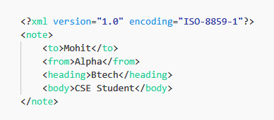

XML stands for Extensible Markup Language. It is a text-based markup language derived from Standard Generalized Markup Language (SGML).
XML tags identify the data and are used to store and organize the data, rather than specifying how to display it like HTML tags, which are used to display the data. XML is not going to replace HTML in the near future, but it introduces new possibilities by adopting many successful features of HTML.
XML is usually used in various Web applications and also XML documents are used by some programs
Some points on XML :
XML is easy to generate.
Encoding structure/documents of XML are in human-friendly format.
XML has extension ending with (.xml).
With an independent data format it is supported by many programming languages and frameworks
The three important characteristics of XML that make it useful in a variety of systems and solutions −
XML is extensible − XML allows you to create your own self-descriptive tags, or language, that suits your application.
XML carries the data, does not present it − XML allows you to store the data irrespective of how it will be presented.
XML is a public standard − XML was developed by an organization called the World Wide Web Consortium (W3C) and is available as an open standard.
Structure of XML document
Tree structure
Example and explanation

The first line is the XML declaration.
The next line describes the root element of the document(<note>).
The next 4 lines describe 4 child elements of the root (to, from, heading, and body). <to>Mohit</to> <from>Alpha</from> <heading>Btech</heading> <body>CSE Student</body>
Final line defines the end of root element(</note>)
Submitted by Mohit Chandra Bhatt, BTECH CSE 4th Year